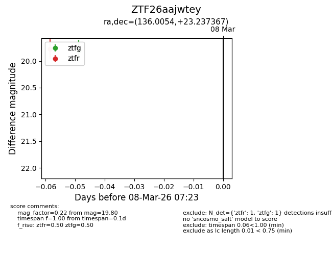
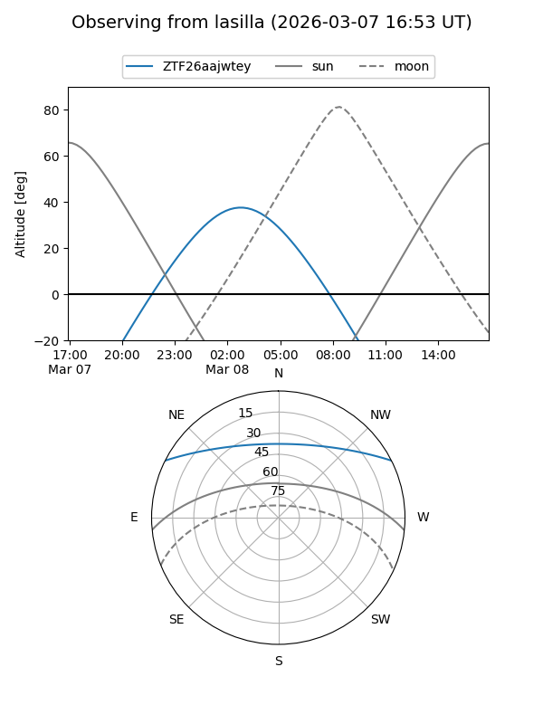
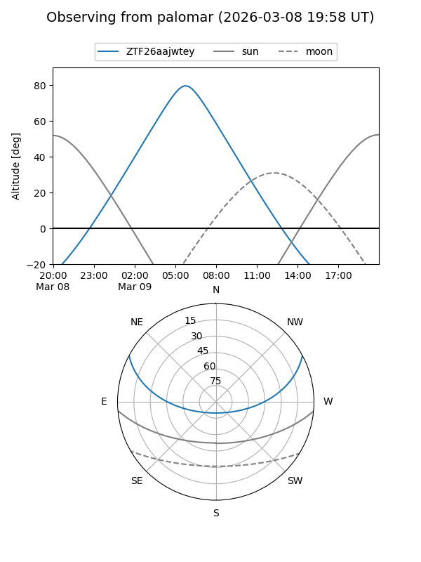
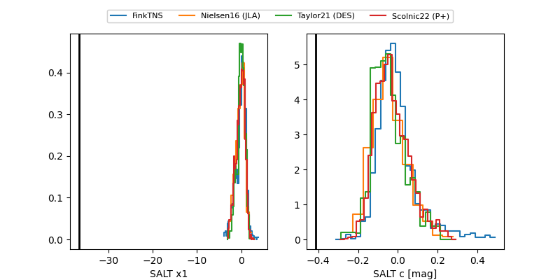

ZTF26aajwtey
Target ZTF26aajwtey at 2026-03-08 07:24
Aliases and brokers:
FINK: link
Lasair: link
ALeRCE: link
alt names
ZTF26aajwtey (ztf,fink_ztf)
Coordinates:
equatorial (ra, dec) = 136.0054,+23.23737
equatorial (HMS+DMS) = 09:04:01.29,+23:14:14.52
galactic (l, b) = (203.9183,+38.83281)
Flags:
Photometry:
last ztfg=19.80, ztfr=19.78
1 ztfg, 1 ztfr detections
Lightcurve

Visibility


Additional plots
